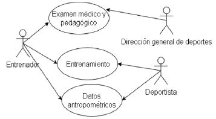
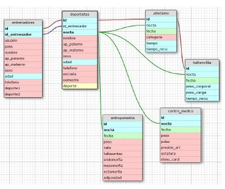
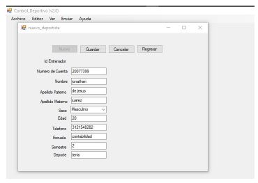
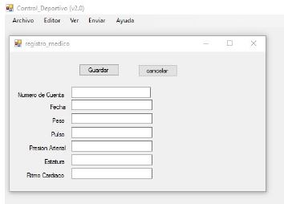
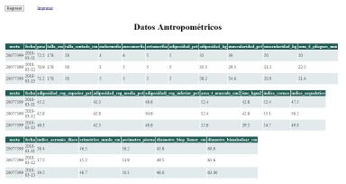

1. ESTADO DEL ARTE
1.1. ANTROPOMETRÍA DEPORTIVA
1.2.PERFIL ANTROPOMÉTRICO
Existen
1.2.1. PERFIL RESTRINGIDO
1.2.2. PERFIL COMPLETO
Tabla 1
Ficha de evaluación antropométrica IPD.

Nota.IPD. el IPD considera 43 mediciones para su ficha de evaluación antropométrica.
1.3 FRACCIONAMIENTO DE LA MASA CORPORAL EN 5 COMPONENTES
1.4. PROBLEMAS EXISTENTES
1.4.1. RECOLECCIÓN DE DATOS TOMA MUCHO TIEMPO
El promedio de toma de datos, es de 30 – 60 min además de que luego se tiene que analizar esos datos y formular una rutina tanto física como nutricional, que esto demora otros 30 – 60 min por lo que diariamente solo se pueden tratar a unos 10 individuos. Esto se debe a que la toma de medidas se realiza de forma convencional y no se cuenta con la tecnología necesaria para acelerar ese proceso.
1.4.2. PERSONAL ENTRENADO PARA REALIZAR LAS MEDICIONES
Para realizar las mediciones antropométricas se debe contar con un personal capacitado y con experiencia ya que hacer uso de esta práctica toma mucho tiempo y no se quiere aumentar aún más el tiempo de este proceso.
1.4.3. PORTABILIDAD TECNOLÓGICA
Muchas veces se ha tenido que realizar las mediciones antropométricas fuera de la ciudad, por lo que surge otra problemática con respecto a la toma de datos ya que llevar una computadora personal es poco práctico, y más si es en condiciones climáticas extremas, como por ejemplo trabajar en altura.
1.4.4. TECNOLOGÍA LIMITADA
La tecnología en el Perú ya es obsoleta en comparación con los demás países sudamericanos, y no es la excepción en el ámbito de la antropometría ya que los equipos que se utilizan para realizar dicho mediciones son muy tradicionales por lo que toma mucho tiempo el análisis de éstos. Por ejemplo, en Colombia, se realizan mediciones con el dispositivo Kinect de Microsoft, el cual toma un mínimo de tiempo.
1.4.5. ERROR HUMANO
Debido a que no se cuenta con la tecnología desarrollada, cuando se realizan las mediciones, se toma una medida y se copia en un bloc de notas, por lo que es muy probable tomar medidas erróneas a causa del mal tipeo.
1.5. SOLUCIONES EXISTENTES
1.5.1. APLICANDO LAS TECNOLOGÍAS DE INFORMACIÓN PARA LA GESTIÓN DE DEPORTISTAS DE ALTO RENDIMIENTO
En este proyecto realizado por cuatro estudiantes de la Facultad de Ingeniería Mecánica y Eléctrico de la Universidad de Colima (México) presenta el desarrollo de un software para la gestión de deportistas basado en estudios antropométricos. Por un lado, se encuentra la migración del software a una aplicación web con su componente de inteligencia artificial que funcione como un asistente virtual, el cual analice los datos relacionados con los deportistas en una base de datos. Además, otro objetivo de este proyecto es utilizar la información antropométrica de cada deportista para tomar decisiones en aspectos relacionados con alimentación, entrenamiento; así como los avances del deportista.
Debido a que este proyecto es la mejora de un sistema desarrollado y piloteado en la Universidad de Colima utilizado desde el 2009, cuyo software se desarrolló para un sistema de bajo entorno de área local diseñado y programado por Visual Basic 6.0 y utilizando una base de dato Access. Se decidió mejorar el diseño de base de datos, configuración de software y las interfaces de usuario para la nueva versión del sistema.
La operación de este sistema inicia cuando el deportista realiza tanto el examen médico como el test psicológico, posteriormente entrará a una etapa de evaluación, para ver si es aceptado o no. En caso de ser aceptado, el entrenador le indicará al deportista a que deporte ingresará y sus datos personales. Como se puede visualizar en la imagen, solo el entrenador será el que podrá hacer modificaciones y actualizaciones en el sistema, desde los entrenamientos hasta la alimentación, y podrá ver los avances y desempeño de sus deportistas. Mientras que el deportista solo podrá ingresar al sistema en línea a través del sitio web de la Universidad de Colima para consultar sus entrenamientos, alimentación y avances sin ninguna modificación.

Figura 1. Caso de uso del sistema de deportistas de natación.
()
El diseño de base de datos consta de cuatro tablas: Antropometría, Deporte, Entrenamiento y Deportista. Cada tabla de la base de daros presenta una clasificación, lo cual favorece a un acceso rápido de la información.

Figura 2.Base de datos optimizada con sus respectivos tablas.
()
Para la construcción de la aplicación web se empleó el lenguaje HTML. Además, se realizó un diseño de la estructura del sistema mediante wireframes, para lo cual se utilizó la herramienta Balsamiq. Adicionalmente se utilizó otra herramienta para el diseño de las interfaces de usuario mediante un esquema IU/UX denominada Axure con la finalidad de que la interacción del usuario con el software sea lo más amigable posible. Con los wireframes generados se generó nuevas interfaces de usuario las cuales permitieron un mejor manejo de la información. Como se puede ver en las figuras, el entrenador hace registro de información del sistema; además de llevar el control médico de sus deportistas. Y genera el reporte físico de cada deportista con sus respectivos datos antropométricos.

Figura 3.Entenador-registro de deportistas.
()

Figura 4.Entrenador-control médico.
()

Figura 5.Entrenador-registro físico datos antropométricos.
()
1.5.2. ANTHROPOMETRIC ITOOL
PONER CUADRO COMPARATIVO ENTRE LAS DOS SOLUCIONES
3. POSIBLES SOLUCIONES (VA EN CONCEPTOS)
Los distintos recursos que posee el IPD son, en infraestructura como centros de entrenamientos, laboratorio de análisis y oficinas; en recurso humano como entrenadores, preparadores físicos, psicólogos, médicos deportivos, nutricionista, terapistas y tecnólogos médicos; y en recursos electrónicos equipos de mediciones antropométricas, bioquímicas (pruebas de urea, lactato y CPK) y fisiológicas. Con todos estos recursos y las necesidades que poseen el personal del IPD especialmente los doctores médicos y nutricionista se logró plantear la posible solución que estará dividida por dos partes tanto la creación de una app para el registro de datos y la de un software para el procesamiento de información.
3.1. APP COMO SISTEMA DE REGISTRO DE DATOS ANTROPOMÉTRICOS
La realización de una app que proporcione un sistema de registro de los datos antropométricos, mediciones físicas y entre otras de una forma rápida y portable. Logrando así recopilar y enviar la información a una base de datos para que esta pueda ser utilizada posteriormente. Para acceder a esta app se necesitará de un registro previo, ya que únicamente estos datos recopilado deben de ser ingresados por un profesional calificado. También el IPD cuenta con dispositivos electrónicos como tablets, completamente nuevas, que serán usadas para lograr el funcionamiento de esta nueva app interactiva de recaudación de información.
3.2. SOFTWARE PARA PROCESAMIENTO DE DATOS ANTROPOMÉTRICOS
El software brindara un procesamiento de los datos obtenidos de la app, logrando así diversos datos estadísticos en masa de grasa, masa muscular, masa ósea, masa residual, masa de piel y la relación que hay entre hueso y musculo. Asimismo, se desea crear un generador de silueta del ser humano, para así mediante el ingreso de parámetros específicos como: tamaño, peso, cantidad de masa muscular, entre otros, generar la simulación de un cuerpo humano con estos parámetros que sirva como referencia hacia lo que deben aspirar los atletas si desean obtener un mayor rendimiento.